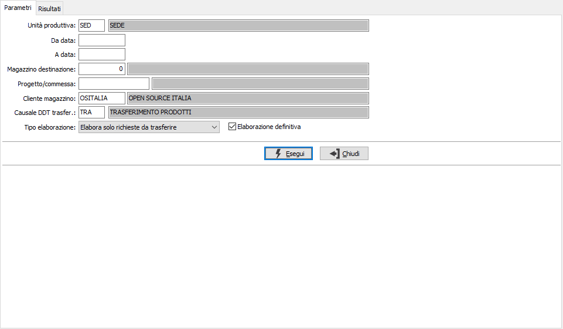
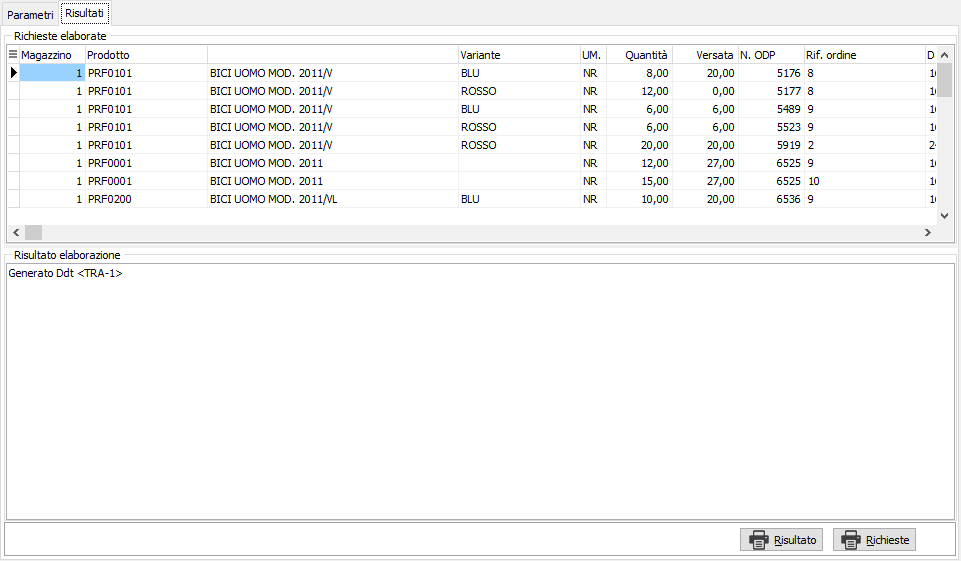

Trasferimento prodotti su magazzini di spedizione
La funzione consente di trasferire i prodotti finiti dal magazzino di produzione ai magazzini di spedizione.
Nei parametri viene richiesta l'unità produttiva con proposta l'unità produttiva di default valida per l'utente connesso ad OS1; è possibile solo scegliere l'unità produttiva, se gestite in configurazione le unità produttive multiple; sono presenti vari criteri di selezione che consentono di indicare un periodo di date, un magazzino di destinazione, un progetto se gestito; in base alla configurazione vengono proposti il cliente magazzino e la causale DDT oppure la causale di magazzino, inoltre è possibile scegliere di elaborare solo le richieste da trasferire, quelle trasferite o tutte, questo perchè eliminando il movimento di magazzino o il DDT le RDP non vengono aggiornate e di conseguenza potrebbe essere necessario ripetere l'elaborazione su RDP già trasferite. è possibile effettuare una simulazione oppure la generazione definitiva spuntando la casella "Elaborazione definitiva"

Premendo Esegui vengono elaborate le RDP derivanti da ordini clienti e da reintegri scorta e generato un DDT interno di trasferimento o un semplice movimento di magazzino dal magazzino di produzione ai magazzini di spedizione indicati sulla RDP (per le RDP da ordini clienti è il magazzino di spedizione del rigo ordine cliente, per le RDP da reintegro scorte è il magazzino su cui è necessario reintegrare la scorta) e nella pagina dei dettagli vengono riportati nella griglia i prodotti inclusi nel documento o nel movimento; in caso di elaborazione definitiva nel riquadro vengono riportate le informazioni relative a quanto generato ed ad eventuali errori occorsi durante l'elaborazione.

Tramite i pulsanti posti in basso è possibile effettuare la stampa delle richieste elaborate che riporterà i dati presenti nella griglia e se è stata effettuata l'elaborazione definitiva anche la stampa del risultato dell'elaborazione che riporterà il contenuto del box risultato.